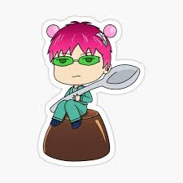

Coffee Jelly

Coffee Jelly worth Saiki's money.
This coffee jelly will blow your mind, mostly because it tastes just like regular coffee jelly and it would most likely make Kusuo's life more disastrous.
Ingredients
- Instant coffee
- Pack of gelatin
- Canned whipped cream
Steps
- Measure out 2 cups of coffee and deposit into a medium saucepan, saving about ¾ cup of coffee in a dish on the side. Dissolve one pack of gelatin into the coffee on the side and give a tiny whisk.
- Take the saucepan to the stove on a medium low flame until it reaches a rolling boil and then dump in the gelatin coffee mixture. Tiny whisk over medium low until the mixture is completely incorporated. Turn off heat and let cool for about 5 minutes.
- Once it’s cooled down, ladle into serving vessel of choice and gently place into fridge for at least 3 hours until gelatinous.
- Remove from fridge and add canned whipped cream on top.
Credit for recipe:Binging with Babish